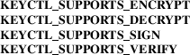

keyctl_pkey_query − Query public key parameters
#include <keyutils.h>
long
keyctl_pkey_query(key_serial_t key, const char
*info,
struct keyctl_pkey_query *result);
keyctl_pkey_query() queries the public key parameters associated with a kernel key that supports these operations (typically asymmetric-type). The caller must have search permission on the target key to be able to query its parameters.
When invoking the function, key indicates the key to be queried, info points to a space- or tab-separated string of "key[=value]" parameters and result points to a buffer in which the result will be placed.
The parameters that can be used in the info parameter string are dependent on the type of key. Parameters can specify such things as encoding types (such as "enc=pkcs1"); see asymmetric-key(7) for more information.
If successful, the result is written into the following struct:
struct
keyctl_pkey_query {
unsigned int supported_ops;
unsigned int key_size;
unsigned short max_data_size;
unsigned short max_sig_size;
unsigned short max_enc_size;
unsigned short max_dec_size;
};
The supported_ops field contains a bitmask of the following constants:

indicating what operations are supported and thus which of the other keyctl_pkey_*() operations can be used with this key.
The key_size field indicates the number of bits in the key size and the max_data_size, max_sig_size, max_enc_size and max_dec_size fields indicate the maximum sizes in bytes of a blob of data to be signed, a signature blob, a blob to be encrypted and a blob to be decrypted respectively.
On success keyctl_pkey_query() returns 0. On error, the value -1 will be returned and errno will have been set to an appropriate error.
|
ENOKEY |
The key specified is invalid. |
EKEYEXPIRED
The key specified has expired.
EKEYREVOKED
The key specified has been revoked.
|
EACCES |
The key exists, but is not searchable by the calling process. | ||
|
ENOPKG |
Some facility needed to complete the requested operation is not available. This is most probably a requested or required digest or encryption algorithm. | ||
|
EFAULT |
Bad address. |
This is a library function that can be found in libkeyutils. When linking, −lkeyutils should be specified to the linker.
keyctl(1), add_key(2), keyctl(2), keyctl(3), keyctl_pkey_encrypt(3), keyctl_pkey_sign(3), asymmetric-key(7), keyrings(7), keyutils(7)